地政学
武漢は長江中流で東西の水運と南北の鉄道が交差する内陸の要衝です。北京、上海、広州、成都、重慶へ向かう回路を束ね、湖北省の政治、軍事、物流、大学研究を通じて中国中部の重心を作る都市です。広域圏の要です。

🇨🇳 中国 / 湖北省 / World City Atlas
長江と漢江が合流する中部中国の結節点。三鎮、橋、鉄道、大学、光谷、熱乾麺の朝、辛亥革命の記憶、洪水と酷暑、医療の記憶が同じ都市圏で重なります。
都市の骨格
武漢は漢口、漢陽、武昌という三鎮が長江と漢江を挟んで成長した都市です。水運、橋、鉄道、大学、工業地帯、湖の景観が組み合わさり、内陸中国の動脈として機能してきました。
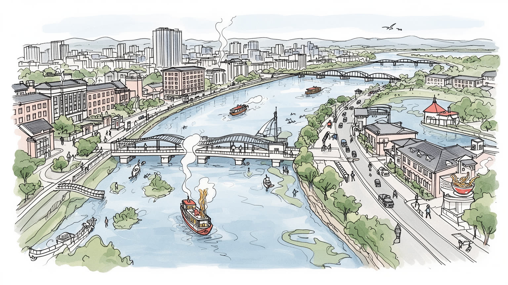
武漢は長江中流で東西の水運と南北の鉄道が交差する内陸の要衝です。北京、上海、広州、成都、重慶へ向かう回路を束ね、湖北省の政治、軍事、物流、大学研究を通じて中国中部の重心を作る都市です。広域圏の要です。
光谷の光電子、自動車、鉄鋼、バイオ医薬、大学発研究、港湾物流、建設、飲食、市場労働が重なります。高度な研究職と工場、配達、清掃、屋台、看護の仕事が都市の日常を支え、雇用の層を厚くします。夜勤も含む街です。
黄鶴楼、辛亥革命の記念地、寺院、教会、租界街、大学文化、楚文化、劇場、熱乾麺の朝食が混じります。信仰は観光だけでなく、葬送、祭礼、家族の祈り、試験期の願掛けにも残る生活の暦です。川辺にも息づく場。
住民には川を渡る通勤、地下鉄、湖畔の散歩、朝市、住宅価格、梅雨の浸水、酷暑、医療への記憶が日常です。旅行者は黄鶴楼、東湖、江漢路、戸部巷、博物館を巡り、水辺の近代都市を読むことになります。市場も近い街だ。
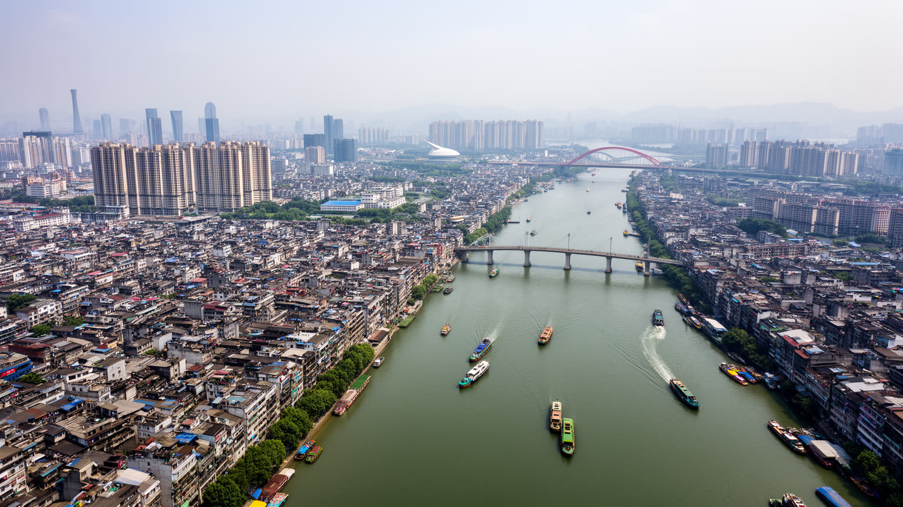
武漢の都市地理は、長江と漢江の合流から始まる。漢口、漢陽、武昌はそれぞれ違う役割を持つ街として発展し、川を挟む距離が商業、軍事、教育、工業、住宅の配置を決めてきた。漢口は市場と港、漢陽は工業と旧い城郭の記憶、武昌は行政、大学、革命の記念地を強く持つ。大河は都市を分ける境界であると同時に、船、橋、堤防、フェリー、地下鉄で結ばれる生活の軸でもある。長江を渡ることは単なる移動ではなく、仕事、通学、買い物、親族訪問の時間を変える経験である。水辺の広さは開放感を生むが、梅雨や増水期には堤防と排水の緊張を思い出させる。武漢を見る時は、高層ビルの線だけでなく、川の流れ、湖、低地、橋脚、古い埠頭の位置を重ねる必要がある。河岸には公園、物流用地、古い倉庫、再開発の高層住宅が並び、同じ水辺でも使い方は場所によって大きく違う。湖の埋立や護岸整備は便利さを増やした一方、雨水を受け止める余地を狭めることもある。地名や橋の位置には、かつての渡し場、港、軍事上の見張り、洪水から逃れる高い土地の記憶が残る。近代以降の工場や鉄道も、こうした水の地形を利用しながら伸びた。朝夕の霧や川風も、通勤と散歩の感覚を変える。季節ごとの水位も暮らしに響く。水が都市を広げ、水が都市を試す。その二面性が、武漢の骨格を作っている。今も。
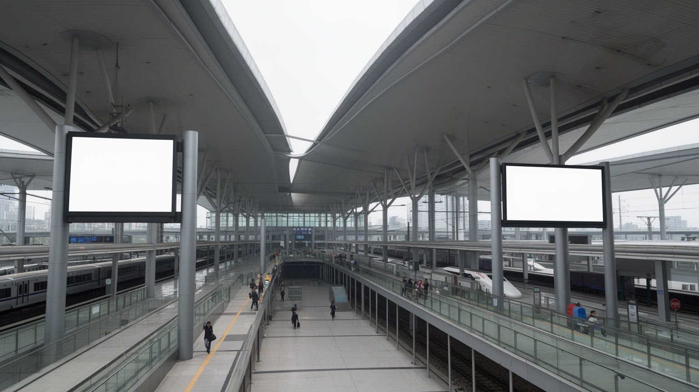
武漢は中国の地図で見ると、東西と南北の移動が交わる場所にある。京広線や高速鉄道は北京、広州、深圳へ伸び、上海、南京、重慶、成都方面への回路も結ぶ。長江の水運は内陸都市でありながら港湾機能を持たせ、原材料、完成品、建材、食料、生活物資を運んできた。武漢長江大橋は近代中国の象徴的なインフラであり、川を越える鉄道と道路の結合が三鎮の関係を変えた。現在は複数の鉄道駅、空港、地下鉄、環状道路、港湾地区が広域都市圏を支える。交通の便利さは企業立地や大学交流、医療圏を広げる一方、通勤距離、乗換、駅前開発、物流車両、騒音、土地価格の課題も生む。駅前にはホテル、病院、オフィス、飲食店が集まり、地方から来る患者や学生、出張者の一時的な生活も受け止める。港と鉄道の接続は、内陸製造業が海へ出るための重要な回路でもある。地下鉄網は三鎮の心理的な距離を縮めたが、末端のバス、自転車、徒歩環境が弱ければ便利さは駅近に偏る。工場の送迎、救急搬送、観光バス、配達員の電動車も同じ道路を使う。災害時には、この結節性が支援物資と人の移動を左右する。駅の案内も多言語化が進む街。交通結節としての武漢は、単に速く通過する都市ではない。多くの人がここで乗り換え、働き、学び、入院し、家族と会う。移動の密度が、都市の社会を厚くしている。
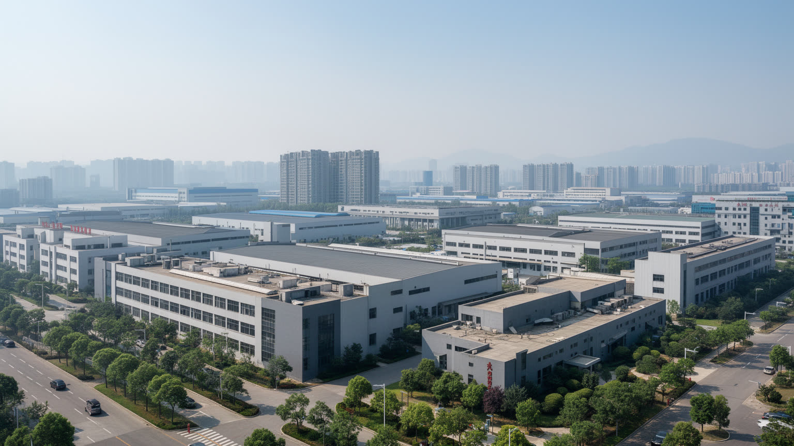
現代の武漢を語るうえで、東湖新技術開発区、いわゆる光谷は欠かせない。光電子、レーザー、通信機器、半導体関連、バイオ医薬、ソフトウェア、自動車部品が集まり、大学と研究機関の人材が産業へ接続される。武漢には鉄鋼や自動車の重い工業基盤もあり、研究開発だけでなく、工場、倉庫、検査、保守、港湾物流、販売網が都市経済を支える。高技能の研究職がいる一方、ライン作業、清掃、警備、食堂、配送、寮管理の労働も不可欠である。技術都市という言葉は華やかだが、製品が社会へ出るまでには材料調達、品質管理、夜勤、環境規制、知的財産、若い技術者の住まいが関わる。武漢の強さは、大学と工業の距離が近い点にある。研究成果を企業へ移すには、実験室、量産工場、投資、行政支援、技能教育が同じ都市圏で動く必要がある。国際的な供給網の変化は、部品調達や輸出管理にも影響する。産業地区の成長は周辺住宅、地下鉄、学校、病院、商業施設を呼び、研究者と現場労働者の生活圏を作る。賃金差や勤務時間の違いも同じ都市の内部で見えやすい。環境対策も競争力の一部になる。中小企業の技術継承も重要だ。ただし産業転換は、古い工場地域の再編、労働者の技能更新、環境負荷の管理を伴う。光谷を見ることは、内陸都市が知識経済へ進む希望と、その足元の労働条件を同時に見ることである。
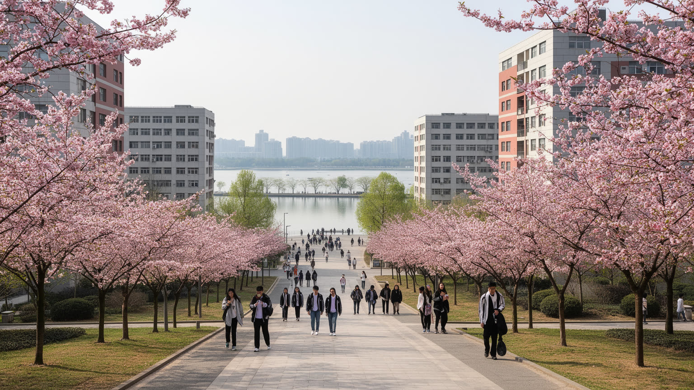
武漢は中国有数の大学都市でもある。武漢大学、華中科技大学をはじめ、多くの高等教育機関が東湖周辺や市内各地に集まり、学生、研究者、病院、書店、安い食堂、賃貸住宅、起業支援を都市に広げている。東湖は観光地である前に、キャンパス、研究施設、住宅地、道路、湿地、散歩道が結びつく大きな環境装置である。湖畔の桜や緑は都市の名所になるが、学生にとっては通学、試験、就職活動、友人との時間の背景である。大学は光谷の人材供給にも関わり、医学、工学、情報、光電子、社会科学の知識が地元企業や公共政策へ流れる。若い人口が多いことは、文化、飲食、賃貸市場、交通混雑にも影響する。大学都市の活力は、研究成果だけでは測れない。学生が安全に暮らし、学費や就職に悩み、家族の期待を背負いながら都市へ入ってくる現実も含む。キャンパス周辺には古い住宅、屋台、コピー店、カフェ、予備校、病院が混在し、学びと生活の境界が近い。卒業生が都市に残るか外へ出るかは、雇用の質や住宅費にも左右される。東湖の環境を守ることは、観光だけでなく研究と日常の基盤を守ることでもある。水質、交通量、週末の混雑、開発の圧力は、大学都市の静けさに直接影響する。東湖と大学群を歩くと、武漢が工業都市であると同時に、若者の時間が集まる知の都市であることが見えてくる。
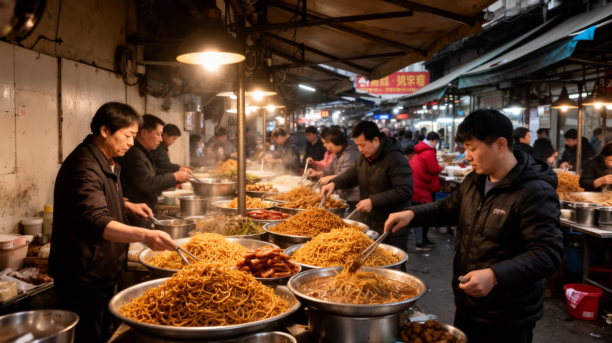
武漢の食文化は朝に強い。熱乾麺、豆皮、糊湯粉、面窩、鴨脖、蓮根料理は、観光客の名物である前に、通勤と通学の時間を支える日常食である。小さな店、屋台、朝市、団地の食堂、大学周辺の安い飲食店は、都市の労働リズムと密接につながる。熱乾麺を立って食べる速さ、湯気、胡麻だれの香り、行列の回転は、武漢の実用的で率直な生活感をよく表す。市場は食材を売る場所であると同時に、近所の情報、価格の感覚、高齢者の会話、移住労働者の仕事、配送の動線が集まる場所でもある。再開発や衛生管理は必要だが、古い市場を一気に消すと、安い食事と人のつながりも失われる。水産物、蓮根、川魚、香辛料、惣菜は長江と湖の地域性を食卓へ運び、郊外農村や卸売市場との関係も見せる。店を支えるのは早朝の仕込み、清掃、配送、現金と電子決済を扱う細かな仕事である。観光客向けの名物化が進むほど、地元客が通える価格と味をどう残すかも課題になる。市場の衛生改善は、働く人の生活を守る形で進められてこそ意味を持つ。食は世代の記憶をつなぐ場でもある。方言の会話も味の一部だ。食の豊かさは有名店の数だけではなく、朝早く働く人が手ごろに食べられるかで測られる。武漢の食と市場を読むことは、都市の胃袋だけでなく、働く時間、住む場所、家計、公共衛生の歴史を読むことでもある。
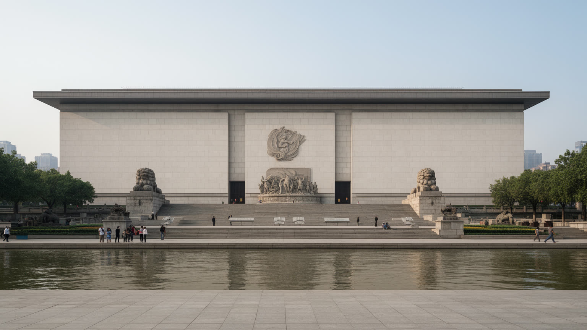
武漢、とくに武昌は辛亥革命の記憶を強く持つ都市である。1911年の武昌起義は清朝の終わりと中華民国の成立へつながる出来事として語られ、記念館、旧跡、学校教育、都市の地名に残っている。この記憶は観光資源であるだけでなく、近代中国が帝政、共和、戦争、革命、国家建設をどのように経験したかを考える入口になる。武昌の街を歩くと、行政施設、大学、軍事の痕跡、旧い街路が近く、政治的な変化が都市空間から生まれたことが分かる。黄鶴楼や長江の景観が古典的な詩情を語る一方、辛亥革命の記憶は近代の急激な転換を示す。記念地はしばしば整えられた説明で見せられるが、そこには若い兵士、学生、知識人、商人、住民が不安の中で動いた時間があった。武漢の歴史を読むには、英雄的な物語だけでなく、政治の変化が日常の安全、商売、家族、教育にどのような影響を与えたのかを見る必要がある。近代化の記憶は、租界、鉄道、学校、印刷、新聞、軍事施設の広がりとも関わる。都市は思想が集まるだけでなく、人と物資が素早く動く場所だったからこそ、政治の転換点にもなった。記念館の外に残る街路や学校、住宅の気配を読むと、革命が式典だけでなく生活の場に接していたことが分かる。革命の記憶は、都市を過去へ固定するものではなく、変化を受け止める土地柄を考える手がかりである。
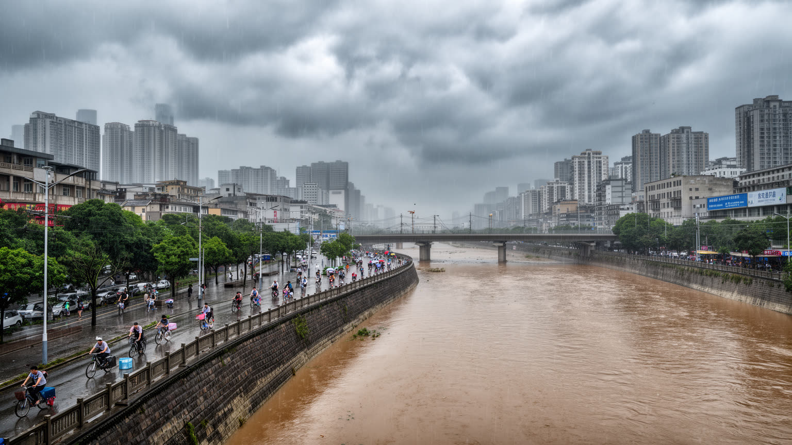
武漢の気候は、夏の蒸し暑さと水のリスクを抜きに語れない。長江中流の低地と湖の多い地形は、梅雨、豪雨、増水、内水氾濫、堤防管理を都市の日常課題にしてきた。歴史的な大洪水の記憶は、堤防、排水路、ポンプ場、避難計画、学校や職場の注意喚起として残る。夏には高温多湿が続き、屋外労働者、配達員、建設現場、清掃、警備、高齢者、学生の健康を直撃する。水辺の風景は涼しげに見えても、アスファルトと高層建物は熱をため、地下鉄の乗換やバス待ちにも負担が出る。気候変動によって、短時間の強い雨と熱波の組み合わせはさらに厳しくなる。武漢の気候適応は、大きな堤防だけでなく、日陰、緑地、湖の水質、地下空間の排水、涼める公共施設、労働時間の調整を含む。古い住宅地では排水溝の詰まりや低い道路が問題になり、新しい地下街や駅では浸水時の誘導が重要になる。工場や市場では暑さが生産性と安全に直結し、弱い立場の人ほど影響を受けやすい。学校の校庭、バス停、観光地の行列、病院の待合でも、暑さと湿気への配慮は生活の質を左右する。湖を守ることは景観だけでなく、雨を受け止める都市の余白を守ることでもある。避難情報の届き方も重要だ。水と暑さへの備えは、防災部門だけの仕事ではない。住宅、交通、医療、学校、観光、工場操業を同時に支える都市運営の核心である。
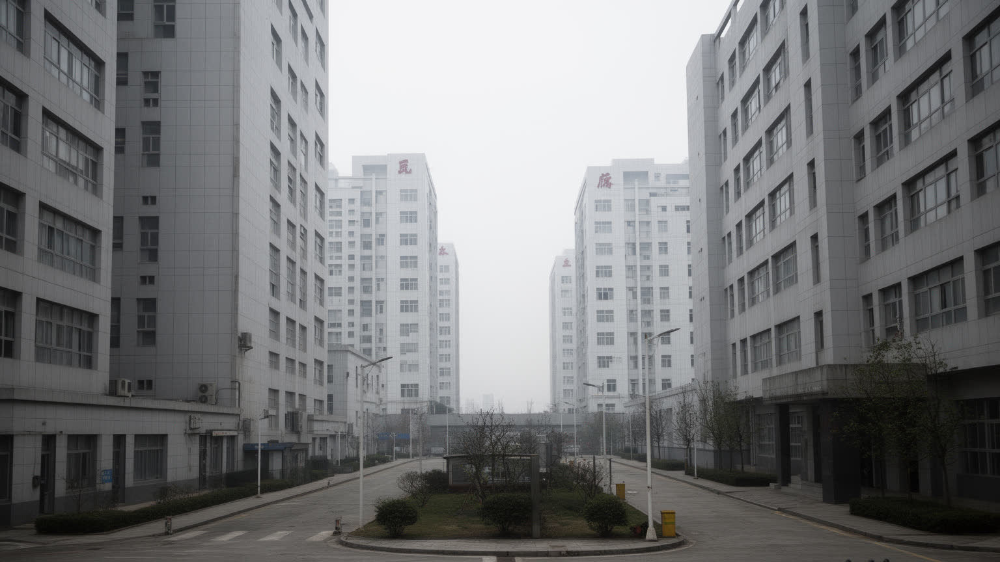
武漢を語る時、COVID-19の記憶を避けることはできない。2020年初頭、この都市は突然、世界的な感染症危機の最初の大きな焦点として見られた。多くの住民、患者、医療従事者、遺族が不安、隔離、喪失、過重労働、情報の不足に向き合った。その経験は、都市の名を単純な記号にして語るべきものではない。武漢には以前から大きな病院、医学教育、研究機関があり、湖北省内外から患者が集まる医療中心でもあった。感染症の記憶は、病院の容量、救急搬送、地域の見守り、住民への情報伝達、働く人の保護、追悼のあり方を考えさせる。外から見る人は、都市を責める言葉ではなく、そこで暮らした人びとの痛みと回復の時間を尊重する必要がある。危機の最中には、医師や看護師だけでなく、清掃、配送、警備、社区の担当者、家族を支える人も都市を動かした。記憶を扱う時には、政治的な議論だけでなく、失われた日常とケアの労働を見落とさない姿勢が必要である。公共衛生は病院の中だけでなく、住宅、換気、仕事を休める制度、近所の助け合い、正確な情報への信頼に支えられる。都市の記憶を丁寧に残すことは、次の危機に備える知恵にもなる。現在の武漢は交通、大学、産業、食、観光を持つ複雑な大都市であり、一つの出来事だけで説明できない。だからこそ医療の記憶は、都市を縮めるためではなく、公共衛生と尊厳を都市理解に加えるために扱うべきである。
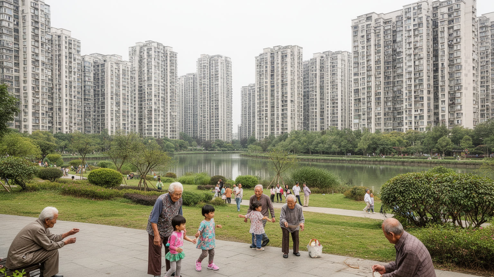
武漢の日常は、三鎮をまたぐ移動と住宅地の広がりによって形作られる。古い団地、新しい高層マンション、大学周辺の賃貸、工場近くの寮、郊外の住宅地は、それぞれ違う生活条件を持つ。川を渡る通勤や通学は地下鉄と橋で便利になったが、混雑、乗換、雨、猛暑は毎日の負担になる。若い世代は就職と家賃、結婚、子どもの教育を考え、高齢者は病院、買い物、階段、近所の会話を重視する。移住者にとっては、住民登録、子どもの学校、医療、職場までの距離が都市に残れるかを左右する。武漢の魅力は、大都市の仕事と湖や川の開放感、大学街の安い食堂、市場の近さが同時にある点だが、その便利さは均等ではない。新しい開発は住宅の質を上げる一方、古いコミュニティや小さな店を押し出すこともある。団地の下には修理店、薬局、朝食店、棋牌室があり、住民の弱いつながりを保っている。高層住宅が増えるほど、管理費、エレベーター、防災、孤立への配慮も重要になる。子どもの遊び場や高齢者の休む場所、夜に安心して歩ける道は、都市の成熟を測る目立たない指標である。近所の市場も生活の支点になる。日常の武漢を読むには、名所だけでなく、朝の地下鉄、団地の広場、屋台、病院の待合、川沿いの散歩道を見る必要がある。都市の実力は、人が無理なく住み続けられるかに表れる。家族の時間にも。
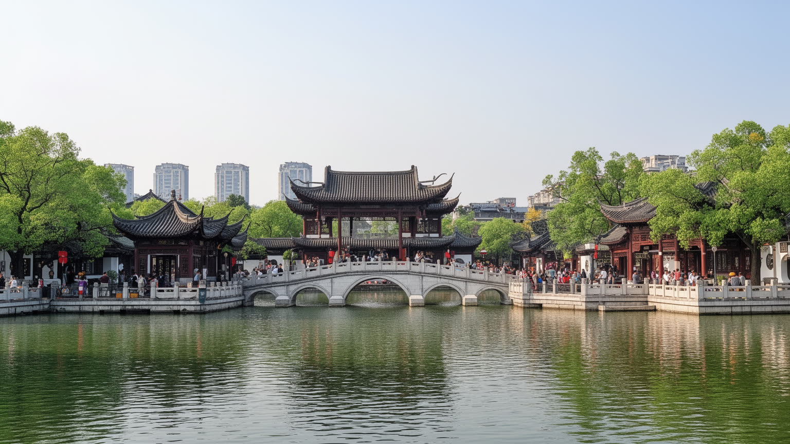
武漢観光は、黄鶴楼だけで完結しない。黄鶴楼は長江を望む詩と記憶の象徴であり、都市の名前を古典文化へつなぐ入口である。だが武漢には東湖の広い水辺、湖北省博物館の楚文化、江漢路の近代建築、旧租界の街路、戸部巷や吉慶街の食、寺院や教会、大学キャンパス、橋の夜景もある。観光客は水辺の開放感と内陸大都市の力強さを同時に見る。文化は名所だけでなく、漢劇、楚劇、ストリートの食、大学生のライブ、書店、湖畔のサイクリングにも現れる。観光の増加は飲食店、ホテル、交通、土産物に利益をもたらす一方、混雑、価格上昇、古い街区の商業化を進めることがある。旧租界の建物や川沿いの遊歩道は、近代の対外接触と商業の記憶を現在の消費空間へ変えている。博物館では楚文化の青銅器や音楽文化が、武漢をより長い地域史へ接続する。寺院や教会を訪れる時には、建物の由来だけでなく、そこで祈る住民の時間を尊重する必要がある。東湖の余暇も、観光と住民の休日が重なる公共空間である。武漢の観光文化を読むには、古典の美しさ、近代の記憶、社会主義期の工業、現代の若者文化を同じ地図に置く必要がある。川と湖を背景に、過去の物語と現在の生活が重なっていることが、この都市の旅の面白さである。名所を巡るほど、住民の日常へ目を向けることが大切になる。歩く速度も変わる。
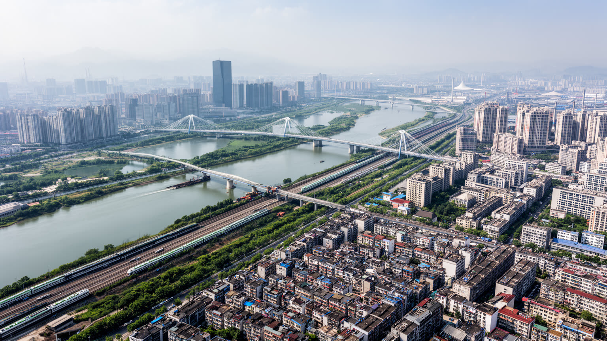
武漢は、一つの印象だけでは捉えにくい都市である。長江と漢江の合流は地理の核であり、三鎮の分かれ方は歴史と日常の感覚を作る。鉄道と水運は中国中部を束ね、大学と光谷は知識産業を押し上げ、鉄鋼や自動車は重い製造の記憶を残す。熱乾麺の朝市、東湖の散歩、黄鶴楼の詩情、辛亥革命の記念地、病院の記憶、梅雨と酷暑への備えは、別々の話ではなく同じ都市の層である。武漢を読む時、経済規模だけを見ると、川を渡る生活、洪水への緊張、大学生の時間、市場の会話、医療従事者の労働が見えなくなる。逆に一つの危機の記憶だけで語ると、都市の長い歴史と現在の複雑さを失う。武漢の重要性は、内陸中国が交通、産業、教育、公共衛生、気候リスクをどう重ねているかを示す点にある。橋の上から見える大河は、都市を分け、結び、試し、育ててきた。水辺の再開発が進んでも、市場、団地、大学病院、工場、寺院、駅はそれぞれ別の時間を保っている。その重なりを読むことで、武漢の強さと傷つきやすさが同時に見える。都市の評価は、交通の速さや産業規模だけでなく、記憶を尊重し、水と暑さに備え、普通の住民が暮らし続けられるかで決まる。だから川、湖、工場、病院、食堂を同じ視野に置きたい。そこに目を向けると、武漢は通過点ではなく、中国中部の生活と変化を読む大きな窓になる。